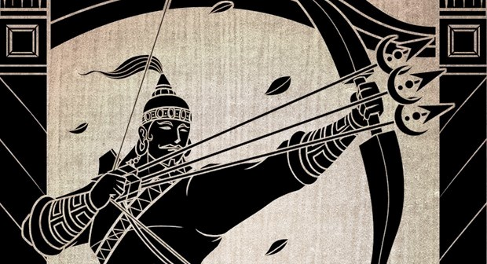

Cultural Education Project - 2nd Semester AIE
Barbarika
Barbarika, a furious warrior who could have ended the great war of Mahabharata in just a minute. In skanda purana, Barbarika was the son of Ghatotkacha and Maurvi; the grandson of Hidimba and Bheem. From the childhood itself, Barbarika was a very courageous warrior. His mother Mata Ahilyavati (daughter of Basuki Naag) taught him the art of warfare. He became powerful after
he received the boon from Lord Shiva. Pleased with his’ penance, Lord Shiva granted him three meticulous arrows as a boon. It is known as ‘Teen Baan’, where the first arrow was capable of marking all the things that are a target,
the second arrow was capable of marking those that Barbarika wants to save and the third one was capable of destroying all those are unmarked from safe markings. In other words, Barbarika was capable of killing everyone with the
release of his three arrows. Hence, he was honored as “the Bearer of three arrows”. Before the Mahabharata war began, Krishna queried few great warriors that how long would the war take in order to be finished alone. Bhishma, Dronacharya,
Karna, Arjun and all the warrior replied to finish the war alone between 20 to 30 days. Krishna and Pandava brothers already knew that Barbarika was going to participate in the war with his three arrows. Pandava brothers agreed
to ask Barbarika to stay away from the war but Krishna disagreed. He knew that Barbarika would not let go of this opportunity to prove himself as the most furious warrior. Knowing this power of Barbarika, Krishna decided to plays
a trick. Shri Krishna disguises himself as a saint when Barbarika was on his way to join the war and ask Barbarika to show his power by marking all the leaves in the forest. When Barbarika closed his eyes to release his arrows,
Krishna hid one leaf below his feet.
After the release of the first arrow, it marks all the leaves in the forest at once and hovers around Krishna’s feet. When Krishna asks why the arrow is hovering around his feet, Barbarika says that a leaf
must be there under his feet. This confirmed Krishna that Barbarika could finish the war within a minute. In curiosity, Krishna asked Barbarika that which side he would fight for. In return, Barbarika said that he promised his
mother to use his power only for the weaker side. Since Pandavas were on the weaker side he would fight on their side. Krishna asked again to
Barbarika that what if his power weakens the Kauravas, he had to switch his sides fighting against the Pandavas. This could continue until he is left alone and nobody wins. Barbarika promised to give anything the saint (Lord Krishna
in disguise) wants. Krishna then asked for the head of Barbarika. Barbarika feeling nervous and confused asked who the saint was and then Krishna reveals himself by showing the true powerful face of Lord Vishnu. Barbarika is one
of the two warriors who actually saw the actual Krishna in his grandeurs divine form. Barbarika pleads Krishna although he could not participate in the Kurukshetra war, he would wish to see all the war. Lord Krishna agreed and
gave this boon to Barbarika. Barbarika cut his head off and gave it to Lord Krishna. Krishna places his head atop on hill where he could witness all of the Mahabharata war.
abhyuktaanamadarmasya tadaatmaanam srijaamyahamh ||
Meaning: When there is the decay of dharma (righteousness) and the rise of adharma (unrighteousness), then I (the Lord) am born in this World.
Obliged by the sacrifice of Barbarika, Krishna grants him a boon. “You will be wholeheartedly worshipped by the name of Shyam in my form when Kaliyug arrives. The devotees who will seek your blessing would be granted their wishes.” As a result of Krishna’s boon, We now worship Barbarika in the form of Khatu Shyamji. The famous temple named Khatu Shyamji is located in the Sikar district of Rajasthan. There is a Shyam pond at a little distance from the temple where the head of Shri Shyamji had appeared. Many devotees believe that by bathing in that pond, the diseases of the body are cured.